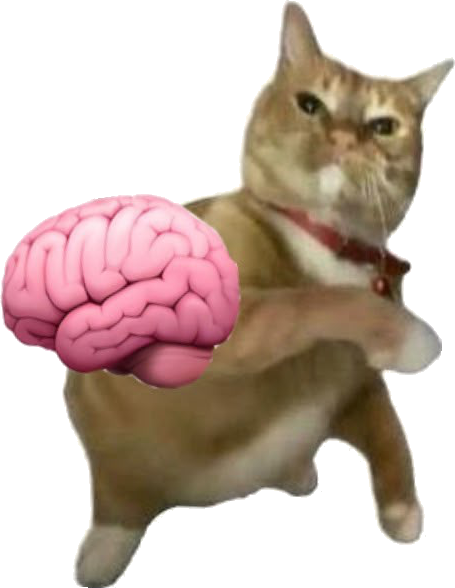
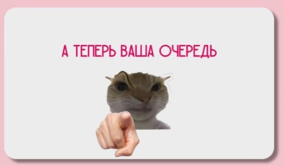

Наша тема — методы разработки управленческих решений. Расскажем о том, как сделать так, чтобы эти решения действительно работали.

Любое правильное решение начинается с постановки задачи. Цель — выбрать действие, которое ведёт к измеримому результату. Сначала поймите, что именно нужно изменить и как будете понимать, что всё получилось.
Что сейчас не так и требует изменений? Определяем, в чём проблема и что нужно изменить.
По чему поймём, что получилось? Задаём критерии успеха.
Какие варианты действий есть? Собираем возможные варианты.
Какой вариант выбираем? Выбираем лучший из них.
Что меняем, если идёт не так? Продумываем контроль заранее.
Главное различие — на чём основано решение: на расчётах, опыте или на том и другом.
Данные, модели, расчёты и правила — всё строится на цифрах. Подход хорошо работает, когда важные параметры можно измерить.
Знания, опыт и суждения специалистов. Они помогают действовать, когда точной информации не хватает.
Расчёты сочетаются с экспертной оценкой и с тем, как договариваются участники. Объединяют и цифры, и мнения людей.
Формализация помогает увидеть части проблемы, связи между ними и последствия возможных действий. Так легче понять, что на что влияет, прежде чем принимать решение.
Разбить большую проблему на небольшие части, с которыми можно работать по отдельности.
Показать цель, возможные действия и то, к чему приведёт каждое из них.
Понять ситуацию вокруг проблемы и найти её настоящие причины.
Проверить возможные сценарии до того, как запустить решение.
Когда у нас есть список вариантов, их нужно честно сравнить по единым правилам — каждую идею оцениваем по четырём критериям:
Какой результат даст вариант и насколько он важен?
Сколько потребуется денег, времени и внимания (сил)?
Что может пойти не так и можно ли будет отменить решение?
Совпадает ли решение со стратегией и интересами команды?
Если цифр и данных для расчётов не хватает, на помощь приходят экспертные методы.
Экспертный метод не отменяет анализа. Он добавляет знания, которых ещё нет в цифрах, и помогает двигаться там, где данных мало.
Команда генерирует гораздо больше идей, но сама по себе группа не делает решение лучше.
Задача касается нескольких подразделений, и без поддержки исполнителей её не решить.
Люди соглашаются на слабый компромисс, чтобы не спорить. Интересы сталкиваются, и никто не отвечает за итог.
Сначала вместе придумываем идеи без всякой критики, и только потом оцениваем их по заранее выбранным критериям.
Принимая решение, важно смотреть и на то, что произойдёт дальше. Аналитика показывает, что будет после выбора и где решение может дать сбой. Смотрите на последствия заранее, а не когда уже поздно.
Варианты развития событий: что будет, если…
Ветки выбора с оценкой вероятных потерь.
Сроки, последовательность и зависимости работ.
Проверяем, за что именно платит организация.
Не начинайте с любимого инструмента. Начинайте с типа задачи.
Стандартная, проблемная или инновационная?
Данные, сроки, цена ошибки.
Один основной метод и один для проверки результата.
Что думают участники и можно ли это сделать на практике.
Владелец (ответственный), метрики, дата пересмотра.
Выбирайте метод по задаче, а не по личным привычкам руководителя.
Чёткие правила, расчёты и контроль отклонений от плана.
Сценарии, мнения экспертов и короткие циклы проверки.
Поиск идей, создание прототипов и проверка на реальных пользователях.

Тест по теме · лучших ждут подарки 🎁